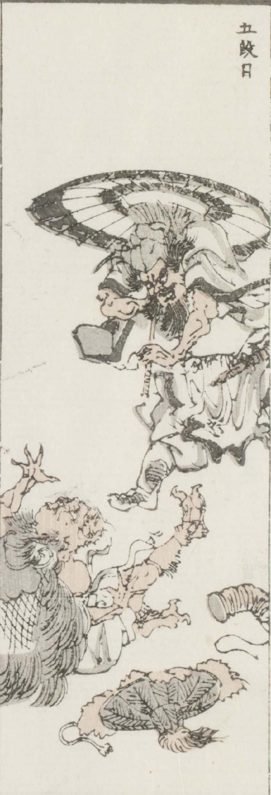

鬼；オニ

中国風の装束をまとった男に走りかかられて、鬼が驚き腰を抜かしている。男はひげを生やし、唐傘を差している。鬼は編笠と脚絆を外して、ひっくりかえっている。
著作者：牧墨僊／出典：親書誌：U426_nichibunken_0097：滑稽洒落狂画苑；コッケイシャレキョウガエン／日付：2007／資源識別子：U426_nichibunken_0097_0028_0000
Copyright (c)2010- International Research Center for Japanese Studies, Kyoto, Japan. All rights reserved.